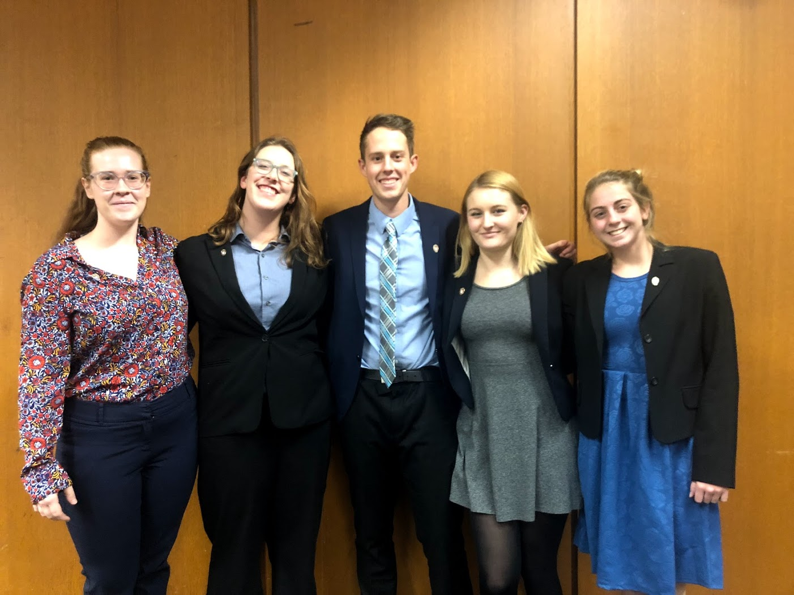
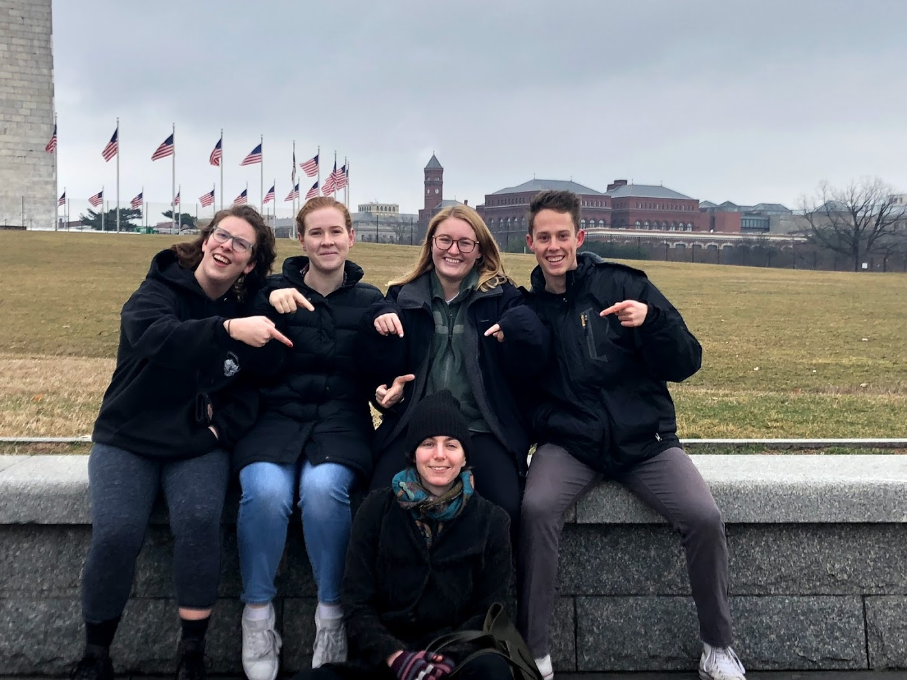

Education
University of Wisconsin - Madison
Bachelor of Science in Computer Science, Communication Arts (Communication Science and Rhetorical Studies)
September 2016 - May 2020
Courses
| Computer Science | Communication Arts | Other |
|---|---|---|
|
|
|
Extracurriculars
Ethics Bowl
 I currently am a member and former team captain of the UW-Madison Ethics Bowl Debate Team, sponsored by the Holtz Center. We placed 3rd in 2017 and 1st in 2018 at the Upper Midwest Regionals, and particpated in Nationals in 2018 and 2019.
Ethics Bowl is a form of debate run by The Association for Practical and Professional Ethics (APPE) where students from all over the country come together to defend practical ethical stances on issues ranging from automation to genetics. The program encourages impromptu speaking as well as critical thinking and team work. Each year, the top 32 teams from over 15 regionals around the country particpate in Nationals to be the best team in the country.
The Team's WIN Page
The Team's Facebook Page

CASA
I particpated in the Communication Arts Student Association (CASA) from January 2017 to May 2018. During that time, I spent a year as the Academic Chair of the student organization. I managed the relationship between the organzation and the department and shaped the image of the major projected to students inside and outside the department.
CASA WIN Page
CASA Facebook Page
Tartan Toastmasters
I have recently become a member of the Tartan Toastmasters at 3M, and I plan to switch to a club in Madison when I return from my internship. As a member, I am expected to particate in Pathways, Toastmaster's online education courses, as well as present prepared and impromptu speeches at the club meetings. My overall goal is to not only keep up my public speaking abilities but also learn to accept and apply constructive feedback from the other members in the club. [Tartan Toastmasters' Web Page] (https://162.toastmastersclubs.org/)